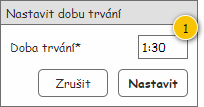
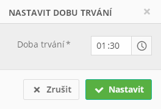

Formulář slouží k nastavení délky trvání, které může být jeho vstupním parametrem.
Výchozí nastavení hodnot jednotlivých komponent prázdného formuláře je uvedeno ve sloupci Výchozí hodnota, a to v tabulce s Přehledem UI komponent. Formulář je zobrazován v modálním okně.
Vstupní data formuláře jsou následující:

| Callout | Komponenta | Nadpis | Typ komponenty | Příklad hodnoty | Hodnota | Výchozí hodnota | Formát | Zpřístupněná | Viditelná | Chování | Validace | Poznámka |
|---|---|---|---|---|---|---|---|---|---|---|---|---|
| 1 | Doba trvání | Doba trvání (hh:mm)* | TímePicker | 1:30 | Vstupní data: Doba trvání. | 0:00 | Vždy | Vždy | – | Větší než nula. | Hodnota je předána v minutách, ale zobrazena je v uvedeném formátu. |
Poznámka: Grafický návrh je pouze ilustrativní.

| Odkaz | Stručný popis změny/doplnění |
|---|---|
| Rozložení | Revize nadpisu komponenty pro nastavení doby trvání (naznačeno modře). |
Jedná se o změny, které proběhnou v rámci M9.
Ovlivní následující UC, z kterých je formulář volán:
| Odkaz | Stručný popis změny/doplnění |
|---|---|
| Rozložení | Změna komponenty pro zadání délky trvání (naznačeno modře). |
| Grafický návrh | Aktualizován grafický návrh dle provedených změn. |